04. RAG — Retrieval-Augmented Generation
이 자료는 langchain/04 폴더의 실습 노트북(01~08)을 압축한 요약 강의 교재입니다.
LLM의 두 가지 한계를 보완하는 RAG(검색 증강 생성)의 개념부터,
Load → Split → Embed → Store → Retrieve로 이어지는 RAG 파이프라인 구축,
그리고 Agentic RAG · Hybrid RAG 같은 응용 아키텍처까지 한 번에 훑어봅니다.
1장. RAG 개요
RAG가 왜 필요한지(LLM의 한계), RAG가 무엇인지(작동 방식), 그리고 RAG 시스템을 만들 때 어떤 순서로 준비해야 하는지를 먼저 살펴봅니다.
1.1 LLM의 한계
아래는 LLM이 태생적으로 안고 있는 두 가지 한계를 보여줍니다.
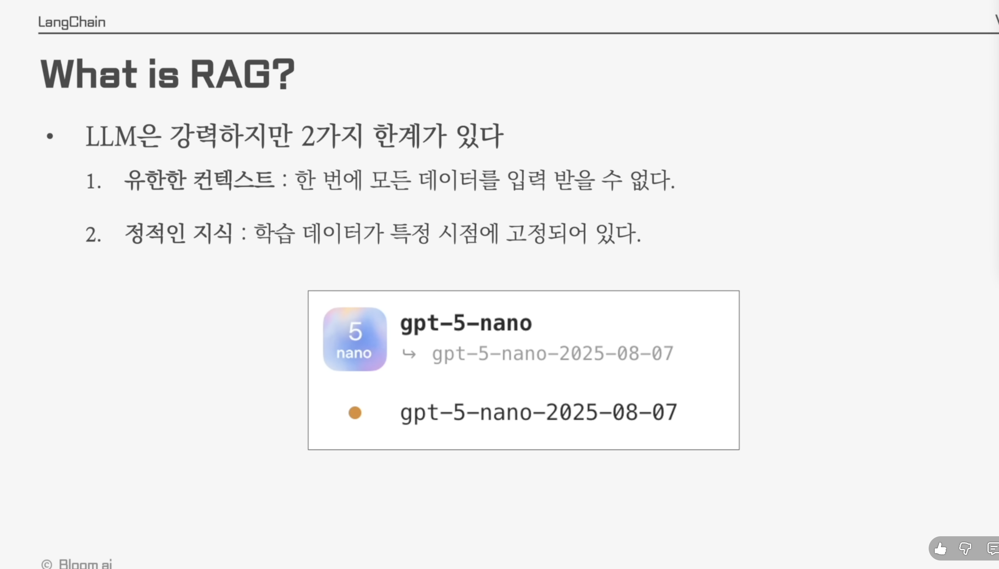
LLM은 강력하지만 두 가지 근본적인 한계가 있습니다.
- 유한한 컨텍스트 : 한 번에 모든 데이터를 입력받을 수 없습니다.
- 정적인 지식 : 학습 데이터가 특정 시점에 고정되어 있습니다. (Knowledge Cutoff)
gpt-5-nano-2025-08-07 모델은 2025년 8월 7일 이후의 정보를 알지 못합니다.
1.2 RAG란?
아래는 RAG의 정의를 나타낸 다이어그램입니다.
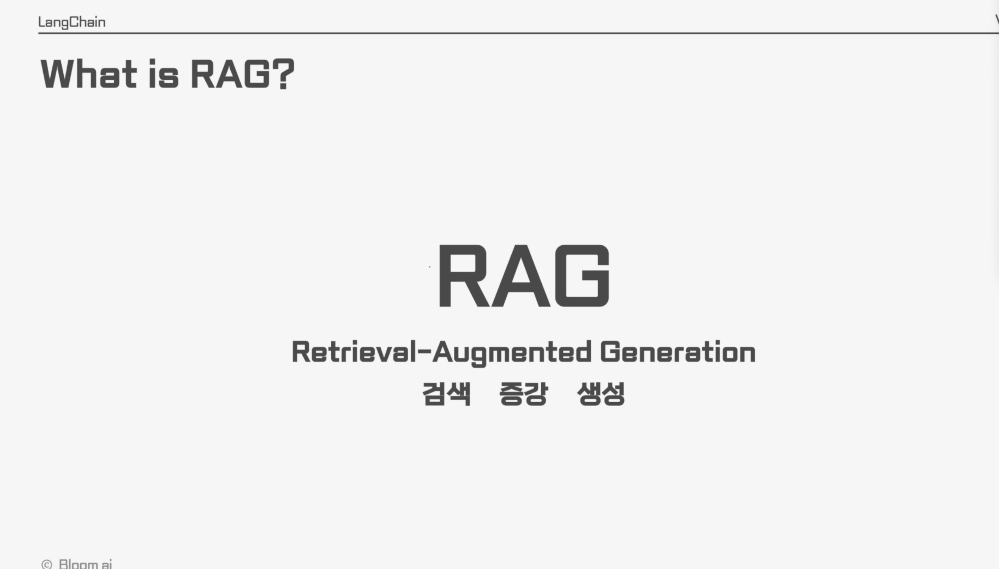
RAG는 Retrieval-Augmented Generation의 약자로, 검색(Retrieval)을 통해 LLM의 생성(Generation)을 증강(Augmented)하는 기술입니다.
아래는 RAG 아키텍처의 전체 개념도입니다.
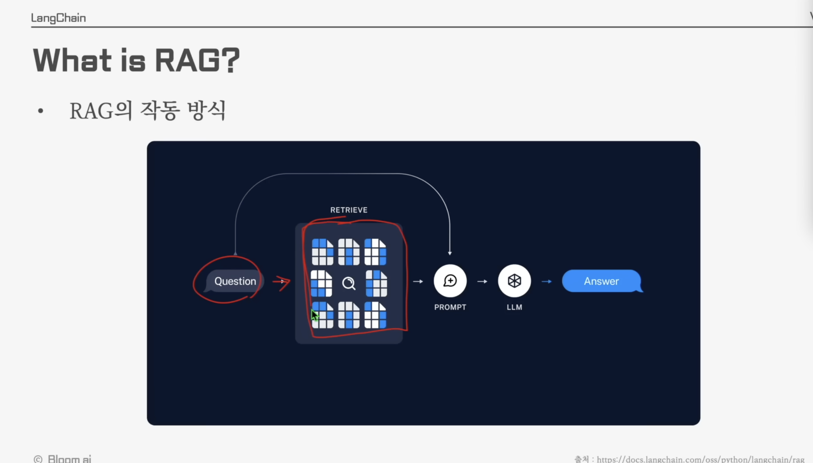
RAG의 작동 방식
Question — 사용자가 궁금한 것을 입력한다
RETRIEVE — Vector DB에서 관련 문서를 찾는다
PROMPT — 검색 결과를 질문과 함께 프롬프트에 넣는다
LLM이 검색된 정보를 바탕으로 답을 만든다
Answer — 사용자에게 답변을 반환한다
LLM이 학습 데이터에 없는 정보도 외부 문서를 실시간으로 검색해 참고함으로써 정확하고 최신의 답변을 생성할 수 있습니다.
1.3 RAG 시스템 구축 순서
아래는 RAG 시스템을 구축하는 전체 순서를 나타낸 다이어그램입니다.
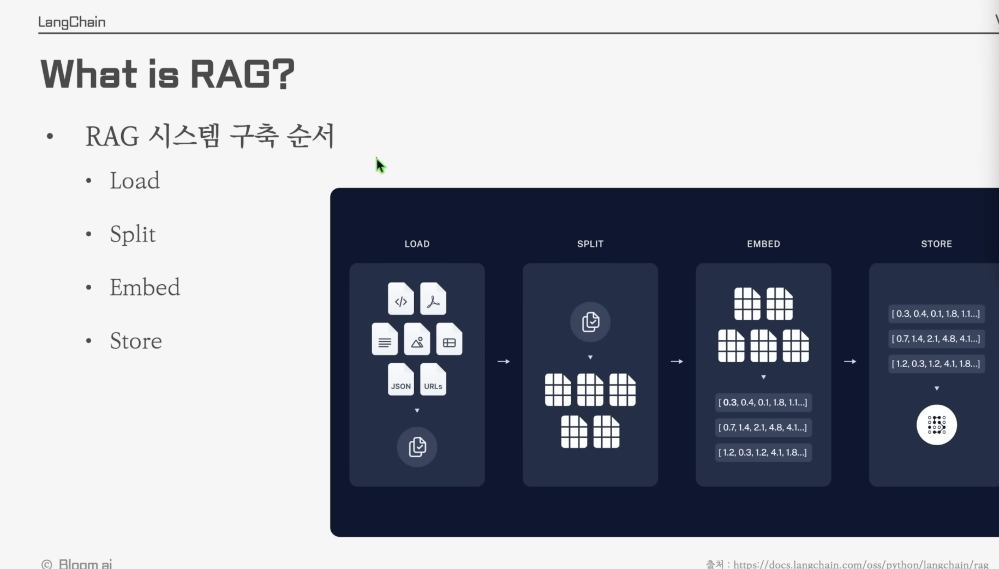
RAG 시스템은 사전 준비(인덱싱)와 런타임(검색·생성) 두 단계로 나뉩니다.
사전 준비 (인덱싱)
다양한 소스(PDF, CSV 등)를 Document 객체로 변환
Document를 작은 Chunk(말뭉치)로 분할
각 Chunk를 고정 길이의 숫자 벡터로 변환
벡터를 Vector DB에 저장
런타임 (검색·생성)
사용자 질문을 임베딩 → Vector DB에서 유사 문서 검색
검색된 문서를 프롬프트에 추가해 LLM이 답변 생성
2장. RAG 시스템 구축
RAG 파이프라인의 다섯 단계 — Load → Split → Embed → Store → Retrieve — 를 한눈에 먼저 보고, 이어서 각 단계를 절 순서대로 자세히 살펴봅니다.
PDF·CSV 등을 Document 객체로 변환
Document를 작은 Chunk로 분할
Chunk를 숫자 벡터로 변환
벡터를 Vector DB에 저장
질문과 유사한 Chunk를 검색
2.1 Load — 문서 로딩
아래는 Load 단계의 개념도입니다.
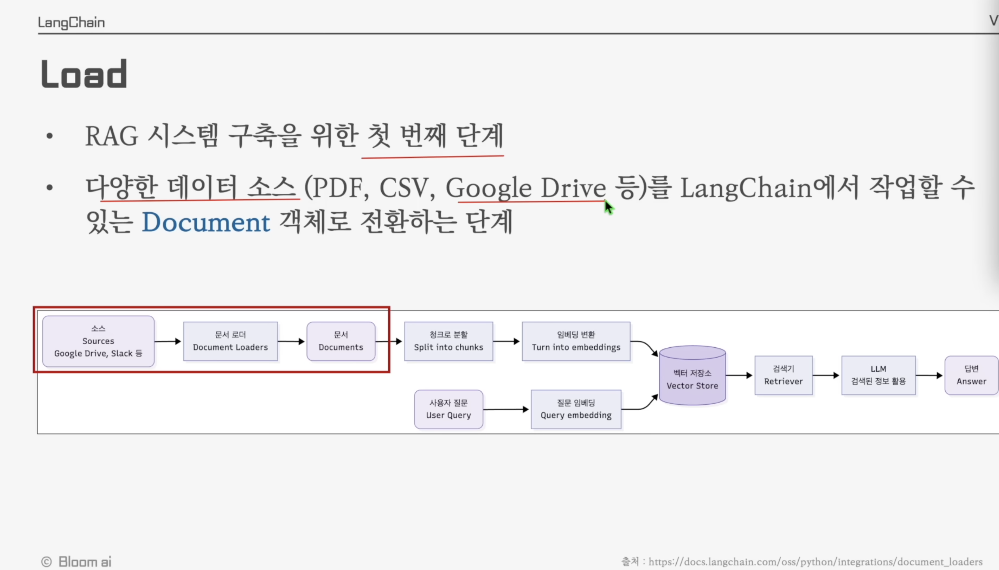
Load는 RAG 시스템 구축의 첫 번째 단계입니다. 다양한 데이터 소스(PDF, CSV, Google Drive 등)를 LangChain에서 작업할 수 있는 Document 객체로 변환합니다.
각 Document 객체는 두 가지 핵심 속성을 가집니다.
| 속성 | 설명 |
|---|---|
page_content | 문서의 실제 텍스트 내용 |
metadata | 소스 경로, 페이지 번호, 생성일 등 부가 정보 |
page_content(실제 글자)이고, 상자 겉면에 붙은 송장 라벨이 metadata(어디서 왔는지,
몇 번째 페이지인지 같은 부가 정보)입니다.
2.1.1 PDFPlumber
아래는 PDFPlumber 로더의 특징을 보여줍니다.
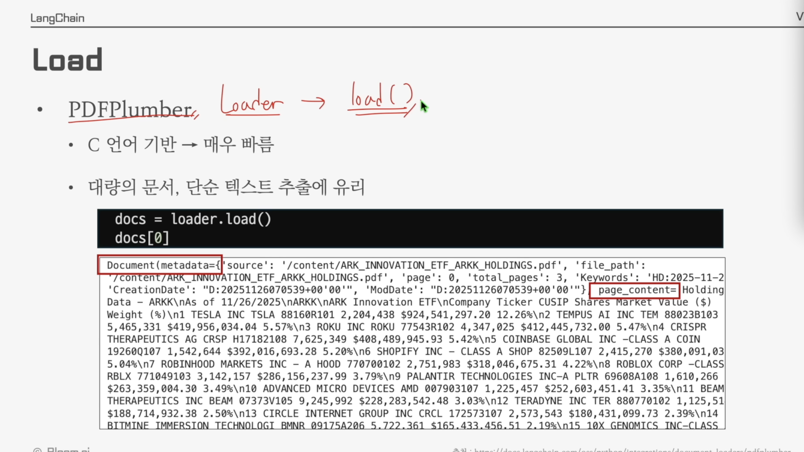
- C 언어 기반 → 매우 빠름
- 대량의 문서, 단순 텍스트 추출에 유리
from langchain_community.document_loaders import PDFPlumberLoader
loader = PDFPlumberLoader("./pdf-file.pdf")
docs = loader.load()
print(len(docs)) # 페이지 수
print(docs[0]) # 첫 번째 페이지 Document 객체아래는 로드된 첫 번째 페이지 Document 객체를 확인한 결과 화면입니다.
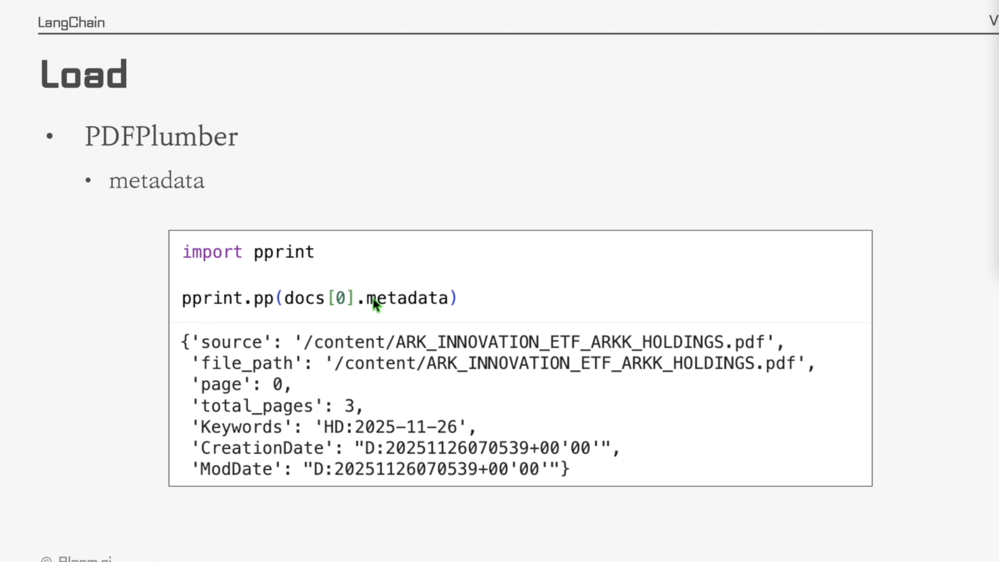
docs[0].metadata에는 소스 경로, 파일명, 페이지 번호, 총 페이지 수, 생성일 등의 정보가 담겨 있습니다.
import pprint
pprint.pp(docs[0].metadata){'source': '/content/ARK_INNOVATION_ETF_ARKK_HOLDINGS.pdf',
'file_path': '...',
'page': 0,
'total_pages': 3,
'Keywords': 'HD:2025-11-26',
'CreationDate': "D:20251126070539+00'00'",
'ModDate': "D:20251126070539+00'00'"}
2.1.2 PyMUPDF
아래는 PyMuPDF 로더의 특징을 보여줍니다.
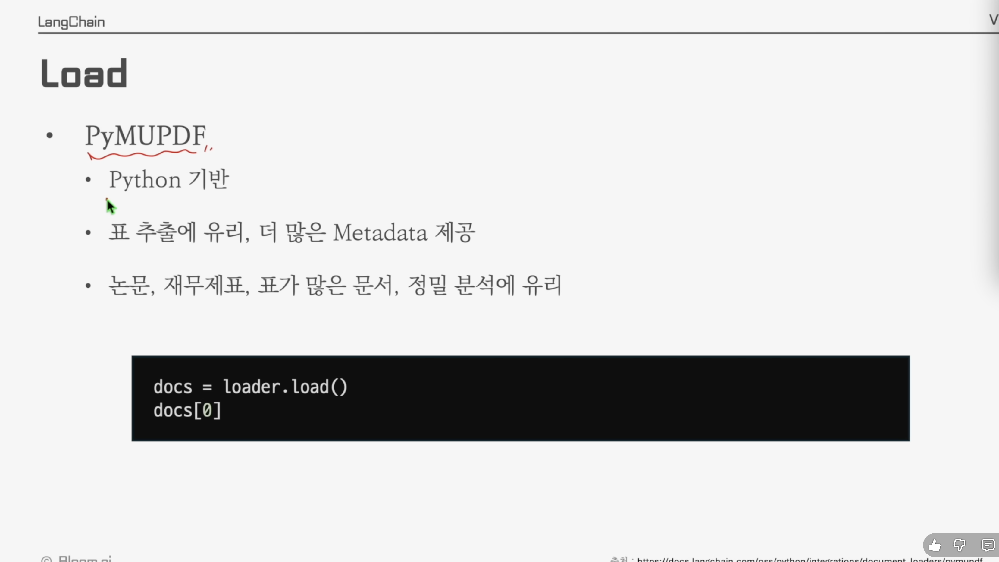
- Python 기반
- 표 추출에 유리, 더 많은 Metadata 제공
- 논문, 재무제표, 표가 많은 문서, 정밀 분석에 유리
from langchain_community.document_loaders import PyMuPDFLoader
loader = PyMuPDFLoader("./pdf-file.pdf")
docs = loader.load()
docs[0]2.2 Split — 청크 분할
아래는 Split 단계의 개념도입니다.
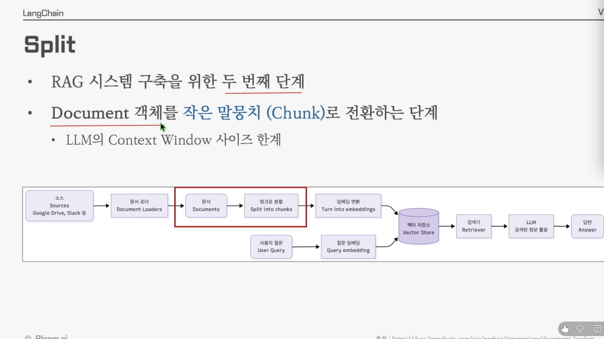
Split은 RAG 시스템 구축의 두 번째 단계입니다. Load한 Document 객체를 작은 말뭉치(Chunk)로 쪼갭니다.
왜 쪼개야 할까?
LLM의 Context Window 사이즈 한계 때문입니다. 전체 문서를 한 번에 넣을 수 없으므로, 관련된 부분만 잘라서 LLM에게 전달해야 합니다.
2.2.1 RecursiveCharacterTextSplitter — 재귀적 문자 텍스트 분할기
아래는 RecursiveCharacterTextSplitter의 동작 방식을 보여줍니다.
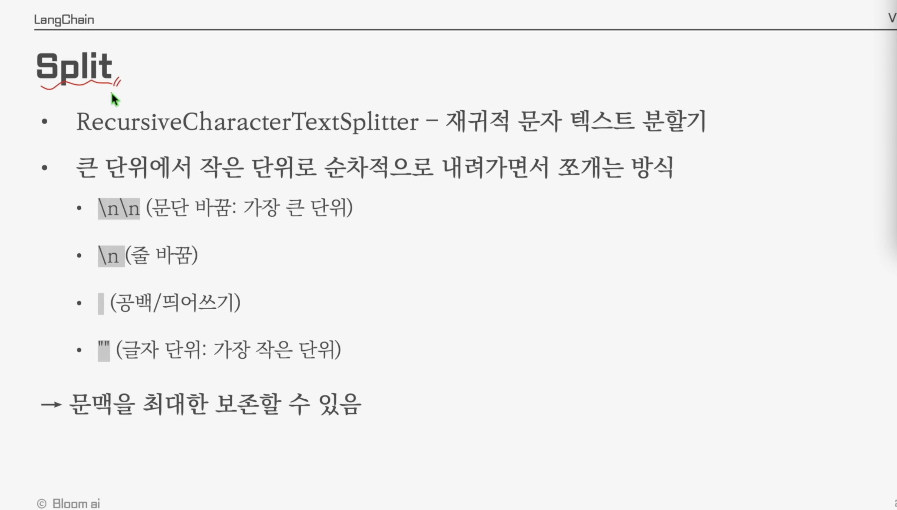
가장 많이 사용되는 텍스트 분할기입니다. 큰 단위에서 작은 단위로 순차적으로 내려가며 쪼개는 방식으로, 문맥을 최대한 보존합니다.
\n\n)을 따라 뚝 자릅니다.
그래도 조각이 크면 다음으로 얕은 홈(줄, \n)을 따라, 그것도 없으면 손톱 자국(공백)을 따라,
정 안 되면 결국 아무 데나(글자) 부러뜨리죠. Recursive 분할기가 딱 이 순서로 움직입니다.
"최대한 티 안 나게, 자연스러운 금부터."
분할 우선순위 (기본값)
\n\n문단 바꿈 — 가장 큰 단위부터 시도
\n줄 바꿈 — 문단으로 안 되면 여기서
" "띄어쓰기 — 줄바꿈도 없으면 단어 사이
""최후의 수단 — 공백도 없으면 글자로
from langchain_text_splitters import RecursiveCharacterTextSplitter
docs = loader.load()
text_splitter = RecursiveCharacterTextSplitter(
chunk_size=300, # 각 청크의 최대 글자 수
chunk_overlap=0, # 청크 간 겹치는 글자 수 (문맥 연결용)
separators=["\n\n", "\n", " ", ""] # 기본 우선순위
)
recursive_docs = text_splitter.split_documents(docs)split_texts vs split_documents
split_texts는 문자열을, split_documents는 Document 객체 리스트를 청킹할 때 사용합니다.
아래는 chunk_size=100으로 분할한 결과 예시입니다.
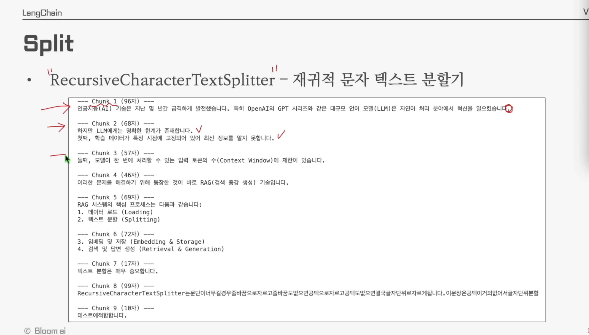
chunk_size=100으로 설정하면 본문이 여러 개의 Chunk로 나뉘어, 각각 100자 이하의 텍스트가 담긴
청크 목록이 생성됩니다.
2.2.2 청킹 전략 참고
아래는 AWS Bedrock이 지원하는 청킹 전략들을 정리한 자료입니다.
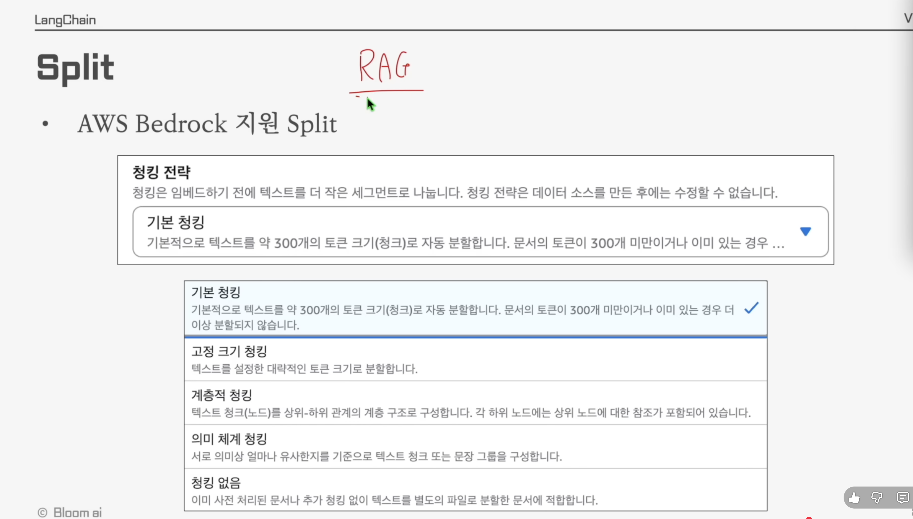
| 전략 | 설명 |
|---|---|
| 기본 청킹 | 약 300 토큰 크기로 자동 분할 |
| 고정 크기 청킹 | 설정한 고정 토큰 크기로 분할 |
| 계층적 청킹 | 상위-하위 관계의 계층 구조로 분할 |
| 의미 체계 청킹 | 서로 의미상 얼마나 유사한지를 기준으로 분할 |
| 청킹 없음 | 이미 사전 처리된 문서에 적합 |
2.3 Embed — 임베딩 (벡터화)
아래는 Embed 단계의 개념도입니다.
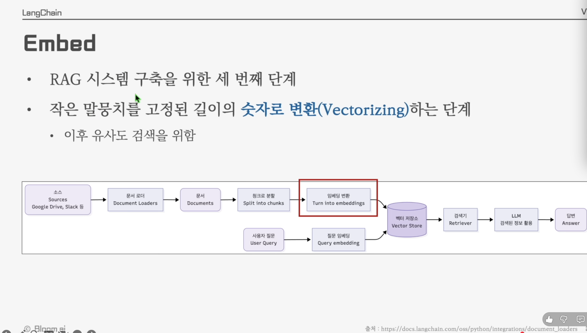
Embed는 RAG 시스템 구축의 세 번째 단계입니다. Split한 각 Chunk를 고정 길이의 숫자 배열(벡터)로 변환합니다. 이후 유사도 검색을 위해 필요합니다.
2.3.1 임베딩/벡터라이징이란?
아래는 텍스트가 벡터로 변환되는 과정을 보여줍니다.
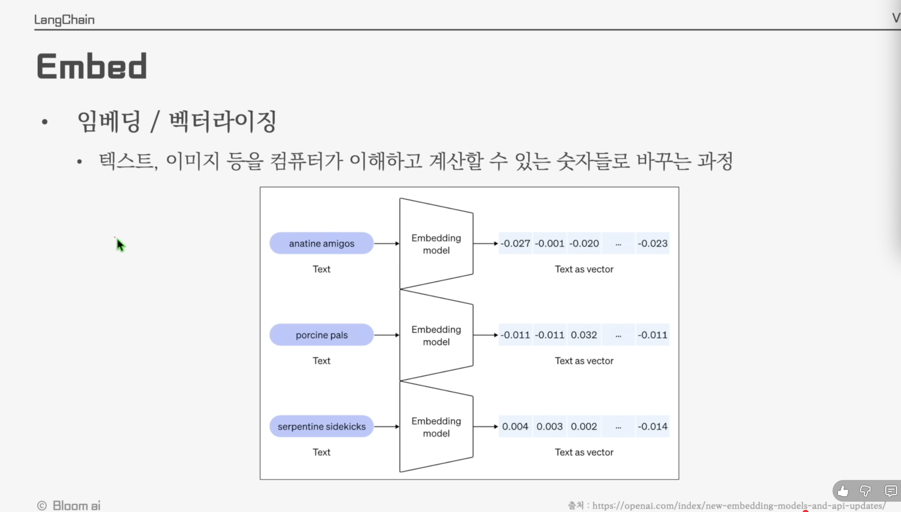
텍스트, 이미지 등을 컴퓨터가 이해하고 계산할 수 있는 숫자들로 바꾸는 과정입니다.
"anatine amigos" → [-0.027, -0.001, -0.020, ..., -0.023]
"porcine pals" → [-0.011, -0.011, 0.032, ..., -0.011]아래는 이 원리를 FIFA 선수 데이터에 빗댄 그림입니다.
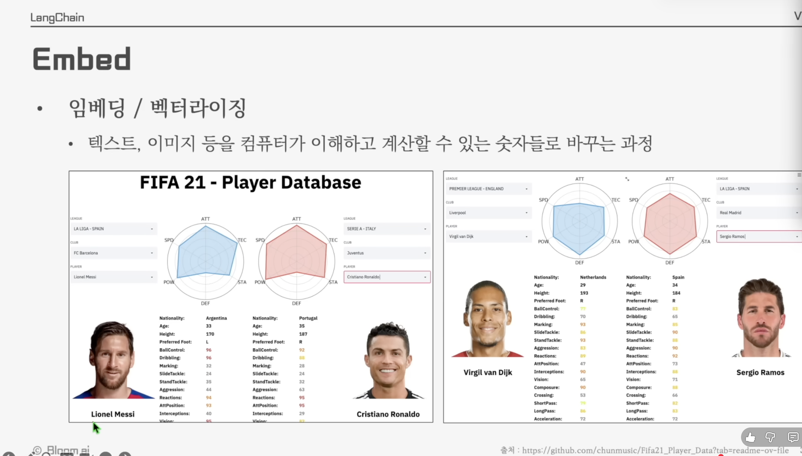
2.3.2 OpenAI Embedding 모델
아래는 OpenAI Embedding 모델을 사용하는 흐름을 보여줍니다.
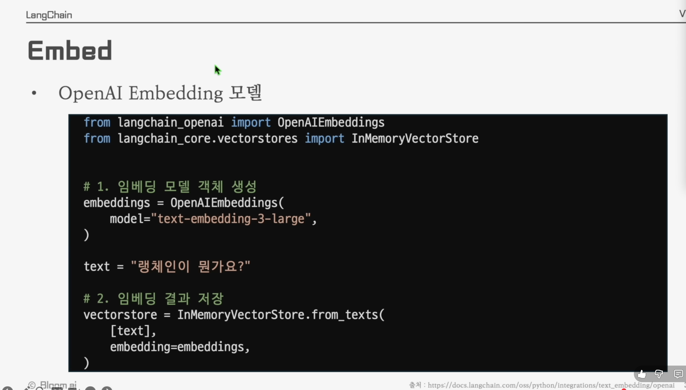
from langchain_openai import OpenAIEmbeddings
from langchain_core.vectorstores import InMemoryVectorStore
# 1. 임베딩 모델 객체 생성
embeddings = OpenAIEmbeddings(model="text-embedding-3-large")
text = "랭체인이 뭔가요?"
# 2. 임베딩 결과를 Vector Store에 저장
vectorstore = InMemoryVectorStore.from_texts(
[text],
embedding=embeddings,
)2.3.3 CacheBackedEmbeddings — 임베딩 캐싱
아래는 CacheBackedEmbeddings의 동작 구조를 보여줍니다.
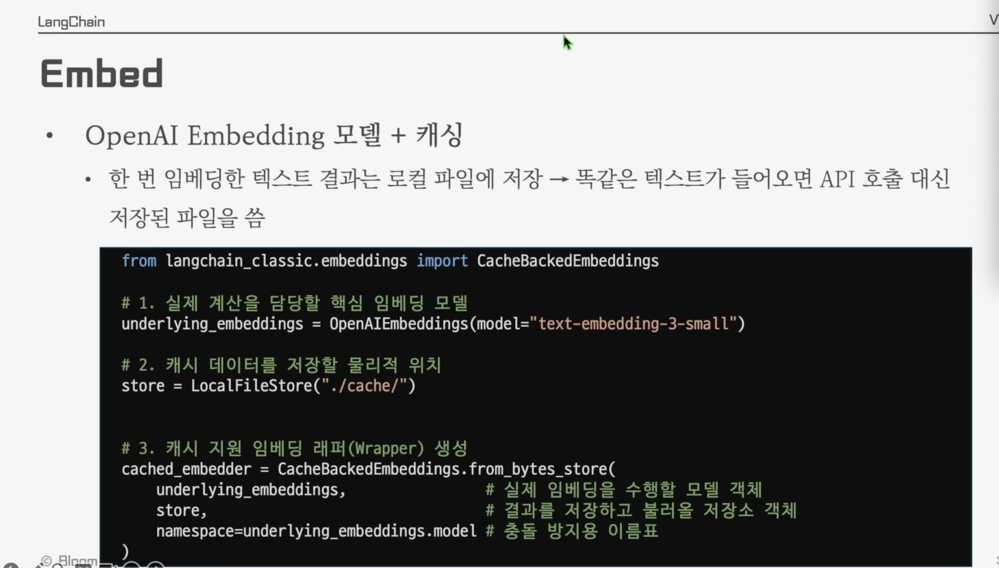
임베딩 API 호출은 비용이 발생합니다. 한 번 임베딩한 텍스트 결과를 로컬 파일에 저장해두고, 똑같은 텍스트가 들어오면 API 호출 대신 저장된 파일을 사용합니다.
from langchain_openai import OpenAIEmbeddings
from langchain_classic.embeddings import CacheBackedEmbeddings
from langchain_classic.storage import LocalFileStore
# 1. 실제 계산을 담당할 핵심 임베딩 모델
underlying_embeddings = OpenAIEmbeddings(model="text-embedding-3-small")
# 2. 캐시 데이터를 저장할 물리적 위치
store = LocalFileStore("./cache/")
# 3. 캐시 지원 임베딩 래퍼(Wrapper) 생성
cached_embedder = CacheBackedEmbeddings.from_bytes_store(
underlying_embeddings, # 실제 계산을 수행할 모델 객체
store, # 결과를 저장하고 불러올 저장소 객체
namespace=underlying_embeddings.model # 충돌 방지용 이름표
)2.4 Store — Vector Store 저장
아래는 Store 단계의 개념도입니다.
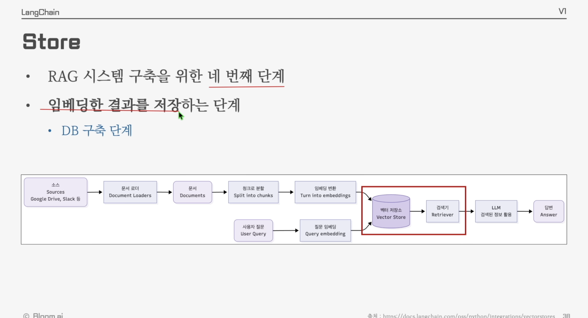
Store는 RAG 시스템 구축의 네 번째 단계입니다. 임베딩한 결과(벡터)를 Vector Database에 저장합니다.
2.4.1 Chroma DB
아래는 Chroma DB의 저장 구조를 보여줍니다.
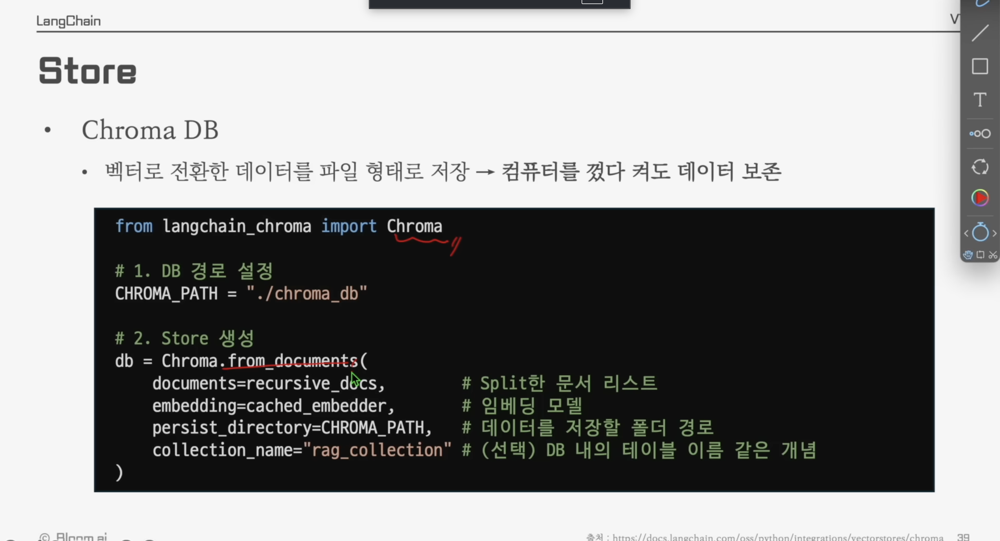
Chroma는 벡터로 전환한 데이터를 파일 형태로 저장합니다. 프로그램을 껐다 켜도 데이터가 보존됩니다.
from langchain_chroma import Chroma
# 1. DB 경로 설정
CHROMA_PATH = "./chroma_db"
# 2. Store 생성 (Split한 문서를 임베딩해서 저장)
db = Chroma.from_documents(
documents=recursive_docs, # Split한 문서 리스트
embedding=cached_embedder, # 임베딩 모델
persist_directory=CHROMA_PATH, # 데이터를 저장할 폴더 경로
collection_name="rag_collection" # (선택) DB 내의 테이블 이름 같은 개념
)기존 Chroma DB를 불러올 때는 documents= 인자 없이 경로만 지정합니다.
# 기존 DB 불러오기 (새 문서 추가 없이 검색만)
db = Chroma(
collection_name="rag_collection",
embedding_function=cached_embedder,
persist_directory=CHROMA_PATH,
)Chroma.from_documents(documents=...)는 책을 한 아름 안고 들어가 서가에 꽂으며 도서관을 새로 짓는 일입니다.
반면 documents= 없이 Chroma(persist_directory=경로)만 쓰는 것은
이미 다 지어진 도서관의 문을 열고 들어가 열람만 하는 것입니다.
경로에 데이터가 있으면 그대로 불러오고, 없으면 빈 도서관이 하나 만들어질 뿐 새 책이 자동으로 들어오진 않습니다.
2.5 Retrieve — 검색
아래는 Retrieve 단계의 개념도입니다.
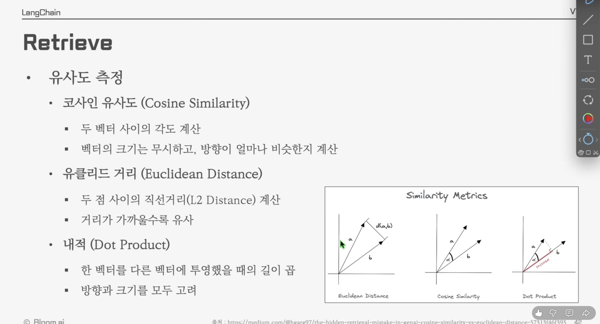
Retrieve는 사용자의 질문을 임베딩해 Vector Store에서 유사한 문서를 검색하는 단계입니다.
유사도 측정 방법
| 방법 | 설명 | 특징 |
|---|---|---|
| 코사인 유사도 (Cosine Similarity) | 두 벡터 사이의 각도 계산 | 벡터의 크기는 무시, 방향만 비교. 가장 많이 사용 |
| 유클리드 거리 (Euclidean Distance) | 두 점 사이의 직선거리(L2 Distance) 계산 | 거리가 가까울수록 유사 |
| 내적 (Dot Product) | 한 벡터를 다른 벡터에 투영했을 때의 길이 곱 | 방향과 크기 모두 고려 |
cosine)은 나침반처럼 "방향이 같은가"만 봅니다(크기 무시).
유클리드(l2)는 줄자처럼 두 점 사이 직선거리를 잽니다.
내적(ip)은 방향과 크기를 모두 고려하죠. 텍스트 의미 검색에서는 보통
코사인이 가장 무난해서 널리 씁니다.
2.5.1 검색기 생성 — as_retriever()
아래는 as_retriever()로 검색기를 만드는 흐름을 보여줍니다.
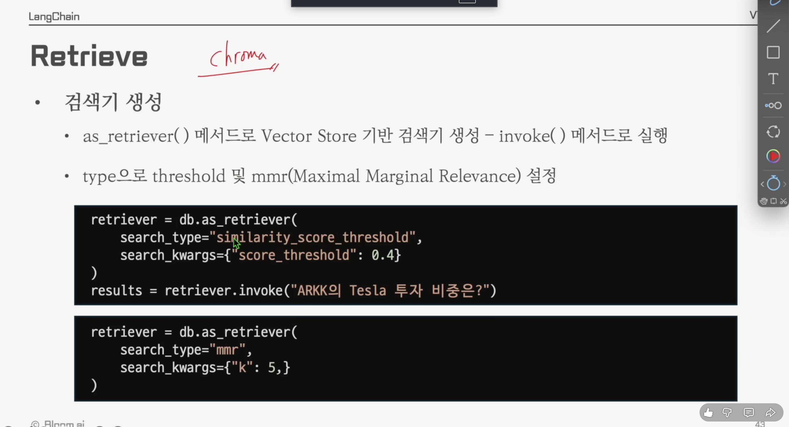
as_retriever() 메서드로 Vector Store 기반 검색기를 생성하고, invoke()로 실행합니다.
# ① 유사도 점수 임계값 방식 (threshold)
retriever = db.as_retriever(
search_type="similarity_score_threshold",
search_kwargs={"score_threshold": 0.4} # 유사도 0.4 이상인 문서만 반환
)
results = retriever.invoke("ARKK의 Tesla 투자 비중은?")
# ② MMR 방식 (다양성 고려)
retriever = db.as_retriever(
search_type="mmr",
search_kwargs={"k": 5} # 상위 5개 반환
)2.5.2 MMR (Maximal Marginal Relevance)
아래는 MMR 검색의 개념도입니다.
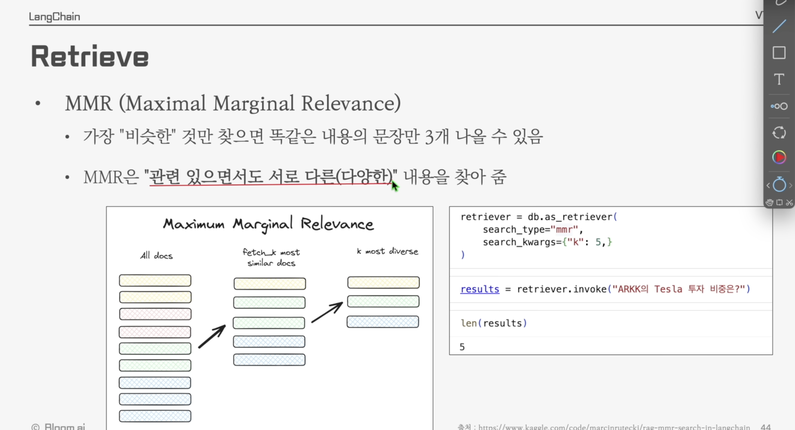
일반 유사도 검색은 "가장 비슷한 것"만 찾기 때문에 똑같은 내용의 문장만 3개 나올 수 있습니다.
MMR은 "관련 있으면서도 서로 다른(다양한)" 내용을 찾아줍니다.
일반 검색: 유사도 Top-K → [A, A', A''] (비슷한 것만)
MMR 검색 : 유사도 ↑ + 중복 제거 → [A, B, C] (다양한 내용)3장. RAG 응용
기본 RAG 파이프라인을 확장한 두 가지 고급 아키텍처 — 스스로 검색 여부를 판단하는 Agentic RAG와, 여러 검색 방식을 결합하는 Hybrid RAG를 살펴봅니다.
3.1 Agentic RAG
아래는 Agentic RAG 아키텍처의 개념도입니다.
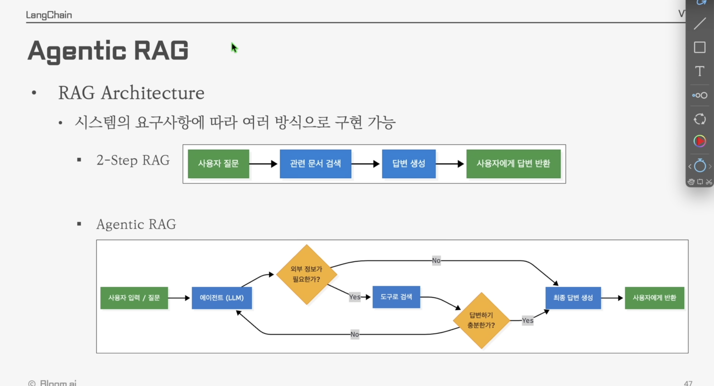
RAG 아키텍처는 시스템의 요구사항에 따라 다양한 방식으로 구현할 수 있습니다.
2-Step RAG (기본)
고정된 단순 파이프라인. 항상 검색을 수행합니다.
Agentic RAG
사용자 입력 / 질문
↓
에이전트(LLM)
↓
외부 정보가 필요한가?
→ Yes → 도구로 검색 → 답변이 충분한가?
→ Yes → 최종 답변 생성 → 사용자에게 반환
→ No → (반복)
→ No → 최종 답변 생성 → 사용자에게 반환LLM이 스스로 검색 필요 여부를 판단하고, 충분한 정보가 쌓일 때까지 반복 검색합니다.
| 구분 | 2-Step RAG | Agentic RAG |
|---|---|---|
| 검색 여부 | 항상 검색 | 필요할 때만 검색 |
| 검색 횟수 | 1회 고정 | 충분할 때까지 반복 |
| 제어 주체 | 개발자 설계 | LLM이 스스로 판단 |
| 복잡도 | 낮음 | 높음 |
3.2 Hybrid RAG
아래는 Hybrid RAG 아키텍처의 개념도입니다.
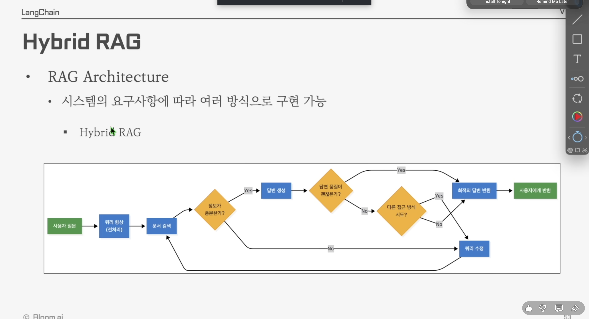
Hybrid RAG는 여러 검색 방식과 LLM 추론을 결합한 고급 아키텍처입니다.
사용자 질문
↓
쿼리 향상 (전처리)
↓
문서 검색
↓
정보가 충분한가?
→ Yes → 답변 생성 → 답변 품질이 괜찮은가?
→ Yes → 최적의 답변 반환 → 사용자
→ No → 다른 접근 방식 시도?
→ Yes → (반복)
→ No → 쿼리 수정 → (재검색)
→ No → 쿼리 수정 → (재검색)RAG 검색과 LLM 추론이 상호작용하며 답변 품질을 높입니다.
BM25(키워드 기반) + 벡터 유사도 검색을 결합하면 더 정확한 문서를 찾을 수 있습니다.
- BM25: 전통적인 키워드 빈도 기반 검색 알고리즘 (ElasticSearch 기본 알고리즘)
- Vector Search: 의미(Semantic) 기반 유사도 검색
두 방식을 결합하면 키워드 매칭과 의미적 유사성을 모두 활용할 수 있습니다.
📚 4장 정리
- RAG 파이프라인: Load → Split → Embed → Store → Retrieve
- Load: PDFPlumber(빠름, 텍스트), PyMUPDF(표, 정밀)로 Document 객체 생성
- Split:
RecursiveCharacterTextSplitter로\n\n → \n → 공백 → 글자순으로 청크 분할 - Embed:
OpenAIEmbeddings+CacheBackedEmbeddings로 비용 절약하며 벡터화 - Store:
Chroma DB로 파일에 영구 저장 - Retrieve:
as_retriever()로 검색기 생성,score_threshold또는 MMR로 다양성 있는 검색 - Agentic RAG: LLM이 검색 필요 여부를 스스로 판단하고 반복 검색
- Hybrid RAG: BM25 키워드 검색 + 벡터 유사도 검색 결합으로 정확도 향상